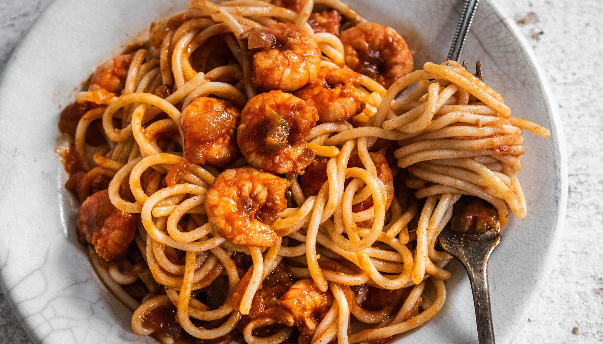

<h1>Shrimp Spaghetti with Tomato Sauce</h1>



<h2>Description</h2>

<p>This is a shrimp spaghetti that can be made with at home ingredients

</p>

<h2>Ingredients</h2>

<ul>
    <li>20 large shrimp, deveined with shell and head left on</li>
    <li>4 tomatoes, or more to taste</li>
    <li>1 bunch flat-leaf parsley, divided</li>
    <li></li>
</ul>
    

